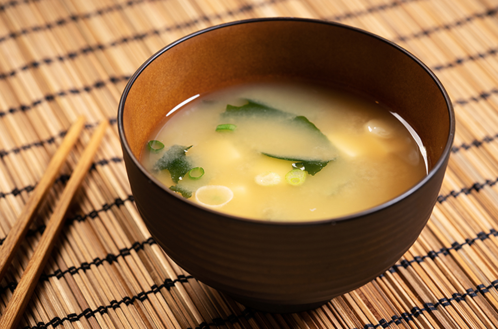

Miso Soup Recipe

Description
Soboro donburi is a Japanese comfort food at its finest. This dish can be found in various forms including a child's bento box for school and even at the most prestigious yakitori restaurants.
What makes soboro so wonderful is its simplicity. You only need a ground chicken and a few other basic ingredients to pull off this delicious dish. You can even make a large batch to portion out and even freeze
Ingredients
- Ground chicken
- Soy sauce
- Mirin
- Cooking sake
- Grated ginger
- Shredded seaweed
- Rice
Steps
- Combine rice and water into a rice cooker.
- Combine soy sauce, mirin, cooking sake, and ginger in a small sauce pan and cook over low heat until slighly reduced
- In a 10 inch saute pan, add the ground chicken and the reduced sauce from step 2. Cook over medium-high heat, stirring frequently and breaking apart the ground chicken into small pieces
- Scoop roughly 200 grams of rice into bowl and smooth the top to create a flat surface. Cover rice with shredded seaweed.
- Spoon over ground chicken mixture and serve hot.